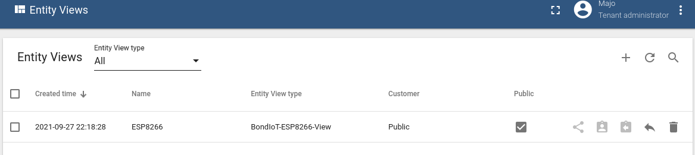

Índice
| Tema | Subtema |
|---|---|
| Dashboard | Default dashboard |
| Dashboard de Set Up | |
| Dashboard de Debug | |
| Devices | Creación de Entity View y Alias |
| Creación de Device y Device profile | |
| Rule chains | Root rule |
| CO2 rule | |
| Load cell rule | |
| MAC address rule | |
| Total passengers rule | |
| Full bus rule | |
| Doors rule |
Default dashboard
El default dashboard es el que se utilizará para mostrar datos en tiempo real y widgets de control, como ser el switch que abre o cierra la escotilla manualmente.
El dashboard puede ser importado desde el repositorio del proyecto.
Dashboard de Set up
Para la modificación de parámetros fijos como el peso estándar de un pasajero o el nivel máximo de CO2 permitido, se creó el dashboard de setup.
El dashboard puede ser importado desde el repositorio del proyecto.
Dashboard de Debug
Este dashboard fue creado para facilitar la detección de errores en el funcionamiento del sistema, ya que se pueden ver todos los atributos y telemetría de los dispositivos.
El dashboard puede ser importado desde el repositorio del proyecto.
Creación de Entity View y Alias
El entity view es a veces utilizado para elegir de donde vienen los datos a mostrar en los widgets del dashboard. Notar que acá también hay que setear para que sea público.
El alias se crea dentro del widget cuando se requiere, el nombre que se le dio para este proyecto es: BondIoT-ESP8266-AliasDevice pero podría variar sin problemas.
Creación de Device y Device profile
- Nombre del device: BondIoT-ESP8266-Dev
- Tiene que ser público para poder ser visualizado en el dashboard por cualquiera que no sea dueño del dashboard.
- En la pestaña Attributes se agregaron los atributos, en la imagen se muestran algunos atributos de servidor. Es importante mantener los nombres como aquí se muestra para que funcionen las Rule Chains y Widgets que dependen de estos atributos.
Los atributos agregados son:
Server attributes:
- alarmStateCO2
- co2
- doors
- loadcell
- maxCO2
- maxPassengers
- nPassengers
- standardWeight
Client attributes:
- ledStatus
Shared attributes:
- calibrationModeLoadCell
- weightForCalibration
El perfil del device en este caso lo dejamos en el default, sin definir nada en particular.
Rule chains
Root rule
Nombre de la regla: BondIoT-ESP8266-RootRule
Esta rule chain puede ser importada del repositorio en Github.
Esta es la rule chain que maneja los llamados a todas las demás rule chains del sistema.
CO2 rule
Nombre de la rule chain: BondIoT-ESP8266-C02Thresh
Esta rule chain puede ser importada del repositorio en Github.
Flujo:
- Agregar a la metadata el atributo shared alarmCO2 y el atributo de servidor maxCO2
- Verificar si la telemetría recibida de CO2 supera el máximo permitido
- Si lo supera, alarmCO2 = TRUE. Si no lo supera, alarmCO2 = FALSE.
- Se guarda el atributo.
Load cell rule
Nombre de la rulechain: BondIoT-ESP8266-Passengers_by_weight
Esta rule chain puede ser importada del repositorio en Github.
Flujo:
- Agregar a la metadata los atributos de servidor: standardWeight y passengersLoadcell
- La telemetría recibida de la celda de carga se divide entre el peso estándar de un pasajero para obtener la cantidad de personas abordo. El resultado se guarda en passengersLoadcell
- Se guarda el atributo.
MAC address rule
Nombre de la rulechain:
Total passengers rule
Nombre de la rulechain:
Full bus rule
Nombre de la rulechain: BondIoT-ESP8266-Notify_full_bus
Esta rule chain puede ser importada del repositorio en Github.
Flujo:
- Agregar a la metadata el atributo shared reachedMaxPass y los atributos de servidor passengersTOTAL y maxPassengers
- Se verifica si la cantidad de pasajeros total alcanzó la máxima permitida.
- Se guarda el atributo.
Doors rule
Nombre de la rulechain: BondIoT-ESP8266-Passengers_Doors